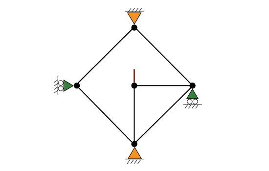

To enhance your learning experience, we've included a selection of sample trusses for you to experiment with and analyze. Choose a truss example from the dropdown menu located in the left panel. After making your selection, you have the option to modify the truss. Then, press the 'Submit' button to receive a step-by-step guide on identifying its zero-force members.
The following table shows the available example trusses.
| Example 1 | |
| Example 2 | |
| Example 3 | |
| Example 4 | |
| Example 5 | |
| Example 6 | |
| Example 7 | |
| Example 8 | |
| Example 9 | |
| Example 10 | |
| Example 11 | |
| Example 12 | |
| Example 13 | |
| Example 14 | |
| Example 15 | |
| Example 16 | |
| Example 17 | |
| Example 18 |  |
| Example 19 | |
| Example 20 |